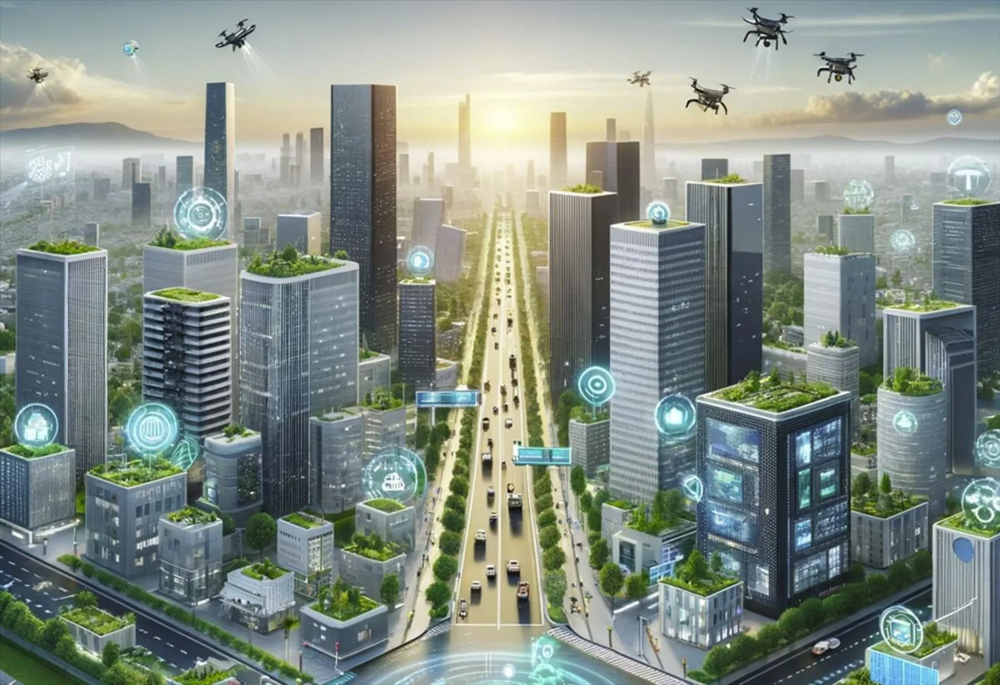
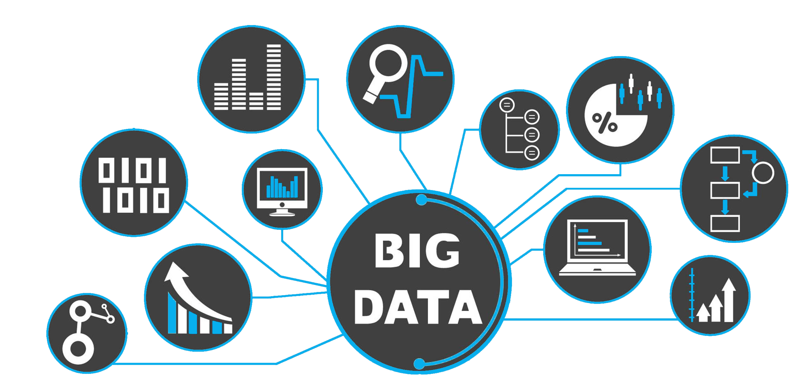
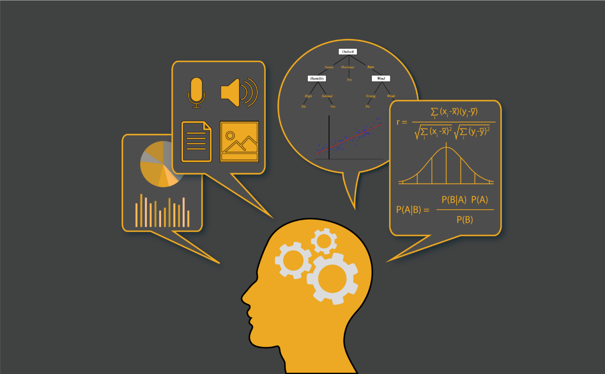

COMPONENTES CIUDAD INTELIGENTE Y INTELIGENCIA ARTIFICIAL 
Las ciudades inteligentes y la inteligencia artificial (IA) son dos conceptos interconectados que dependen de una infraestructura tecnológica avanzada para funcionar eficazmente. Ambas áreas utilizan componentes específicos que permiten gestionar, analizar y mejorar los datos que generan los sistemas urbanos y las plataformas tecnológicas. A continuación, te explico los componentes clave de cada uno y cómo se integran en estos dos temas.
Componentes de las Ciudades Inteligentes
Las ciudades inteligentes dependen de varios componentes tecnológicos que permiten la recopilación, procesamiento y análisis de datos, con el objetivo de mejorar la eficiencia y calidad de vida en las áreas urbanas. Aquí te explico tres de los componentes más importantes:
Sensores IoT (Internet de las Cosas)
Descripción:
Los sensores IoT son dispositivos conectados a internet que recopilan datos en tiempo real desde diversos aspectos de la ciudad, como el tráfico, el clima, la calidad del aire, el uso de energía y más. Estos sensores se colocan en diversas infraestructuras urbanas, como semáforos, edificios, estaciones de monitoreo ambiental, y sistemas de transporte público.
Integración:
con Ciudades Inteligentes: Los sensores IoT son fundamentales para las ciudades inteligentes, ya que proporcionan los datos que permiten monitorear el funcionamiento de la ciudad. Estos datos alimentan sistemas de análisis para mejorar la toma de decisiones en áreas como la gestión del tráfico, la seguridad y la distribución de recursos.
Plataformas de Gestión de Datos (Big Data)

Descripción:
Las plataformas de Big Data permiten almacenar, procesar y analizar grandes volúmenes de datos generados por los sensores IoT y otras fuentes de datos. Utilizan herramientas de almacenamiento distribuido, como bases de datos NoSQL y Hadoop, que pueden manejar datos no estructurados y de alta velocidad.
Integración:
Las plataformas de Big Data permiten integrar y procesar los datos provenientes de diversos sensores y sistemas de la ciudad. Esto facilita la toma de decisiones en tiempo real, como ajustar los semáforos para optimizar el flujo de tráfico, prever la demanda de energía o gestionar la recolección de residuos.
Redes de Comunicaciones (5G y Conectividad)
Descripción:
Las redes de comunicación avanzadas, como la conectividad 5G, son esenciales para las ciudades inteligentes, ya que permiten la transmisión rápida y confiable de grandes cantidades de datos entre dispositivos IoT y plataformas de análisis.
Integración:
Las redes de comunicación 5G ofrecen baja latencia y alta velocidad, lo que es crucial para la operación eficiente de las ciudades inteligentes. Permiten la interconexión de miles de dispositivos IoT, garantizando que los datos se envíen y procesen en tiempo real, lo cual es vital para operaciones como la gestión del tráfico, la respuesta a emergencias y la monitorización de servicios públicos.
Componentes de la Inteligencia Artificial (IA)
La inteligencia artificial es una tecnología clave que impulsa la transformación digital en muchos sectores, incluida la gestión de ciudades inteligentes. La IA permite que las máquinas aprendan, adapten y tomen decisiones basadas en datos. A continuación, se describen tres componentes clave de la IA y su integración con las ciudades inteligentes:
Algoritmos de Aprendizaje Automático (Machine Learning)

Descripción:
El aprendizaje automático es un subcampo de la IA que utiliza algoritmos para identificar patrones en los datos y hacer predicciones o recomendaciones sin intervención humana directa. Los algoritmos de ML mejoran con el tiempo a medida que procesan más datos.
Integración:
Los algoritmos de ML son fundamentales para las ciudades inteligentes, ya que permiten analizar los datos masivos generados por los sensores IoT y otros dispositivos conectados. Por ejemplo, pueden predecir el tráfico en tiempo real, optimizar las rutas de transporte público, o incluso predecir la demanda de energía en diferentes partes de la ciudad.
Análisis Predictivo

Descripción:
El análisis predictivo utiliza técnicas de IA para prever eventos futuros basándose en datos históricos y actuales. Emplea modelos estadísticos y algoritmos para hacer predicciones sobre diversos aspectos, como el comportamiento del tráfico, la demanda de recursos o los patrones de consumo.
Integración:
En una ciudad inteligente, el análisis predictivo ayuda a anticipar problemas antes de que ocurran. Por ejemplo, puede predecir picos en el tráfico durante eventos especiales, lo que permite ajustar dinámicamente los semáforos, redirigir el tráfico o informar a los conductores sobre rutas alternativas. También puede prever la demanda de agua o energía para mejorar la distribución y evitar cortes.
Procesamiento de Lenguaje Natural (NLP)

Descripción:
El procesamiento de lenguaje natural (NLP) es una rama de la IA que permite a las máquinas entender, interpretar y generar lenguaje humano de manera natural. Se utiliza en asistentes virtuales, chatbots, y sistemas de atención al cliente automatizados.
Integración:
En las ciudades inteligentes, el NLP puede mejorar la interacción entre los ciudadanos y los servicios públicos. Por ejemplo, los chatbots pueden responder preguntas frecuentes sobre el transporte público, el estado del tráfico o la disponibilidad de servicios en tiempo real. También puede utilizarse en sistemas de gestión de emergencias para analizar y responder a las solicitudes de los ciudadanos.
COMPONENTES Integración de Robótica e Internet de las Cosas
La robótica moderna está cada vez más vinculada a dispositivos IoT, que generan grandes volúmenes de datos en tiempo real. Las bases de datos juegan un papel esencial al almacenar y procesar estos datos para coordinar las acciones de los robots de manera eficiente.
Aplicacion:
Robots industriales conectados a sensores IoT recopilan datos sobre temperatura, presión o vibración para ajustar su desempeño en tiempo real.
Tecnología asociada:
Bases de datos de series temporales (como InfluxDB) y distribuidas (como Apache Cassandra) permiten el análisis en tiempo real para optimizar la productividad de los robots.
Bases de Datos Autónomas para la Robótica
Las bases de datos autónomas, potenciadas por inteligencia artificial, se están utilizando para gestionar sistemas robóticos complejos. Estas bases de datos son autoajustables, autoprotectivas y autorreparables, lo que reduce el tiempo de gestión y aumenta la fiabilidad.
Aplicacion:
Robots de logística en almacenes inteligentes, como los de Amazon, dependen de bases de datos autónomas para gestionar la ubicación de productos y optimizar rutas de entrega.
Tecnología asociada:
Oracle Autonomous Database y Google BigQuery son ejemplos de bases de datos que pueden adaptarse automáticamente a las necesidades de los sistemas robóticos.
Robótica Colaborativa y Bases de Grafos
Los robots colaborativos (cobots) trabajan junto a humanos en tareas industriales y comerciales. Las bases de grafos son ideales para mapear y analizar las relaciones entre robots, personas y objetos, mejorando la cooperación en entornos complejos.
Aplicacion:
En una fábrica, los cobots interactúan con trabajadores humanos y otros robots. Una base de datos de grafos puede modelar estas interacciones para prevenir conflictos o accidentes.
Tecnología asociada:
Neo4j y TigerGraph son herramientas que permiten analizar relaciones complejas, facilitando la toma de decisiones en sistemas colaborativos.
CIUDADES INTELIGENES
 Leer mas...
Leer mas...
INTELIGENCIA ARTIFICIAL
 Leer mas...
Leer mas...